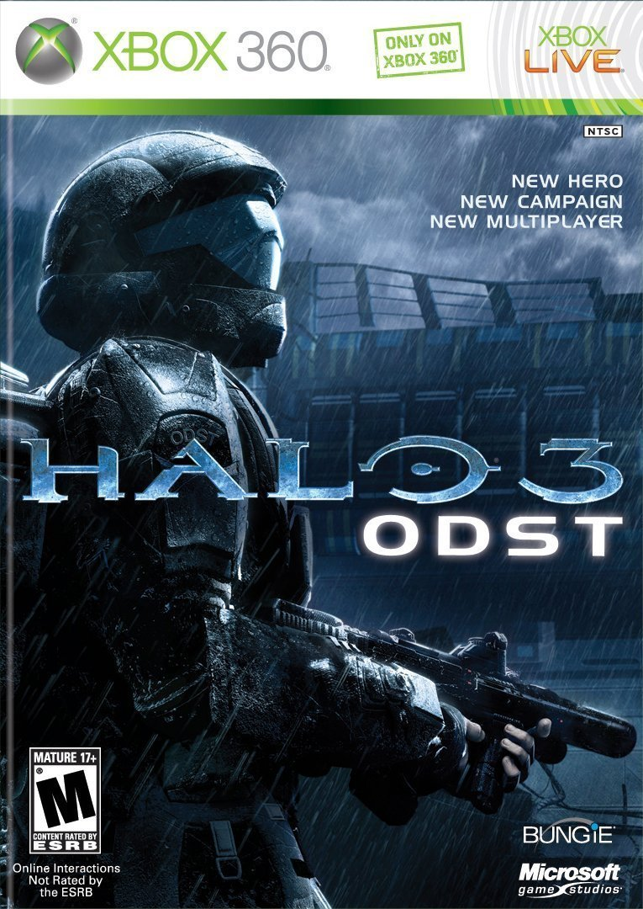

Halo Universe
 Halo 3: ODST, conocido previamente como Halo 3: Recon, es un juego que fue desarrollado por Bungie. Utiliza el mismo motor gráfico y físico que Halo 3. La trama nos mete en la piel de un grupo ODST (Orbital Drop Shock Troopers) que es lanzado sobre Nueva Mombasa durante la invasión del planeta Tierra que llevaban a cabo los ejércitos del Covenant. El protagonista principal tendrá que enfrentarse a las fuerzas del Covenant con la ayuda de la IA que controla el funcionamiento y la seguridad de Nueva Mombasa (Kenia, África). A esa IA se le conoce como Superintendente y ayudará a los protagonistas del juego a llevar a cabo sus misiones. Resumen:La historia sigue a un equipo de soldados ODST que es desplegado en Nueva Mombasa para abordar una nave Covenant. Sin embargo, antes del descenso, Dare cambia las coordenadas y la nave realiza una ruptura en el espacio, destruyendo gran parte de la ciudad y dispersando a los soldados. El Novato despierta seis horas después y busca a su equipo, siguiendo pistas que revelan lo ocurrido: Buck intenta rescatar a Dare, pero su cápsula está vacía. Se encuentra con Romeo, quien lo salva de un Huragok. Dutch aterriza en la Reserva Natural y lucha contra el Covenant para defender un Ascensor Orbital, pero fracasa y se une a la defensa de la ONI. Mickey lidera un convoy de tanques hasta la ONI. Dutch y Mickey ayudan a evacuar a los marines y destruyen el puente de la ONI para evitar que el Covenant lo cruce. Luego hacen estallar el edificio. Romeo y Buck se enfrentan a un Jefe Brute, quien hiere gravemente a Romeo. Buck logra matarlo y evacuarlo con su equipo. El Novato sigue buscando y finalmente encuentra a Dare en el metro. Ella le revela que su misión era recuperar datos del Superintendente, una inteligencia de la ciudad. Juntos, extraen la información con la ayuda de un Ingeniero y huyen mientras Buck los cubre. El equipo escapa en un Phantom Covenant robado y observa cómo la ciudad es destruida en la búsqueda del Arca. En la escena final, el Sargento Johnson interroga al Ingeniero, y si se completa el juego en legendario, se muestra al Profeta de la Verdad observando una actividad misteriosa en los túneles. |